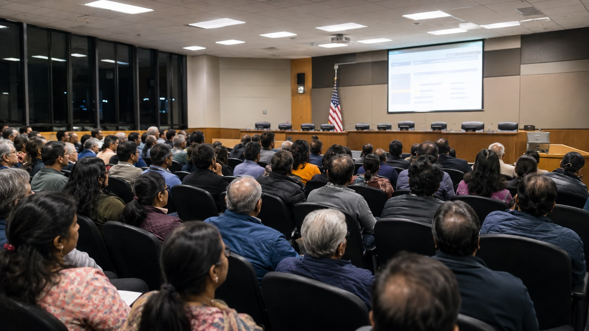
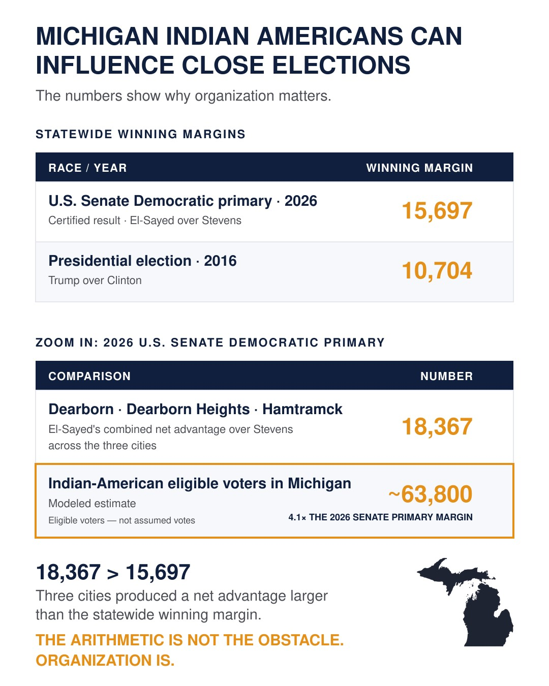

Illustrative concept — AI-generated image. Not a depiction of any specific individual or location.
WHAT THIS ARTICLE IS ABOUT
You do not have to agree with every conclusion in this article to understand its central point.
Indian Americans have achieved extraordinary personal success: careers, homes, professional standing and opportunity for their children. But private success does not automatically create public influence. Relationships with elected officials, a voice in curriculum and legislative processes, and the ability to respond when a temple or religious practice becomes a public issue must be built separately.
That matters because some public decisions affect families specifically through Hindu heritage — not merely through Indian ancestry. This article documents those issues, explains why an Indian-American identity and a Hindu-American civic voice can coexist, and shows what A4H adds: the electoral capacity to make a community visible, countable and consequential.
The ask is modest: a $10 membership, less than five minutes, and a commitment to stay informed and vote — especially in primaries.
You came to America — many of you with little more than a graduate degree and a work ethic — and you built something. A career. A home. A family whose children are succeeding in education, careers and American life. Indian Americans are among the highest-income and most highly educated population groups in the United States, as consistently documented in the Census Bureau's American Community Survey. That success is real, and it is not in dispute here.
What this article disputes is a conclusion that follows naturally from that success but does not actually follow logically from it: that because your family has done well, your community has influence proportional to its size. It does not. Personal success and community influence are two different things, and they do not automatically produce each other.
The formula that got you here is necessary. It is not sufficient.
What Personal Success Builds
Career and financial security
A home and family
Professional credibility
Individual opportunity
What Civic Organization Builds
Relationships with elected officials
An informed voting constituency
A voice in public decisions
Community influence
Organizing is not un-American. It is, in fact, the mechanism by which American democracy is designed to work. Every constituency that has successfully protected and advanced its interests in this country has done so by aggregating its voice. Teachers organize. Veterans organize. Seniors organize. Business owners organize. Farmers organize. Irish Americans organized, Italian Americans organized, Jewish Americans organized — and none of them became less American by doing so. They became more powerfully American, because they participated more fully in the democratic system designed for exactly this kind of organized participation.
"Joining an organization that represents your community's interests is not withdrawing from American life. It is participating more fully in it."
The question for Hindu Americans in 2026 is not whether to organize. Several organizations already exist. The question is whether the community is organized at a scale proportional to its size. A community numbering in the millions — whose members are among the country's highest-income and most highly educated populations and contribute significantly to every sector of the American economy — should command civic attention proportional to those facts. It does not yet. That is the gap this article is about.
Illustrative concept — AI-generated image.
The Objections
The most common objection to this argument is not that it is wrong. It is that it feels irrelevant to the reader's actual life. "I am doing fine. My children are doing fine. I am not political by nature, and I have not experienced any of the issues you are describing." This objection deserves a direct answer rather than a dismissal, because it reflects a reasonable reading of one's own experience.
The relevant distinction is between issues that have already arrived and issues that are approaching. A person who has not yet experienced a problem is not immune to it — they are simply upstream of it. Several of the policy questions that most directly affect Hindu American families are not hypothetical future risks. They are active present-tense decisions being made in legislative chambers, school board meetings, and administrative agencies right now. The curriculum your grandchildren will study is being revised in ongoing review processes. California's hate-crime law expressly distinguishes the ancient Hindu, Buddhist and Jain swastika from the Nazi Hakenkreuz when addressing displays intended to terrorize. Most other states do not provide that same explicit statutory clarity. Employment law in several jurisdictions has been modified in ways that specifically affect South Asian professionals. These things are happening on a schedule that does not wait for any individual to decide to become interested in them.
The second common objection is that organizing as Hindu Americans means becoming partisan or activist. It does not. Joining A4H says exactly one thing: you believe Hindu Americans deserve an organized civic voice in America. The full case for what that means — and what it does not require — is in the WHY A4H tab.
A related question concerns the label itself. Many people are comfortable calling themselves Indian American but hesitate at “Hindu American.” The two terms describe different dimensions of identity — not competing loyalties. Pew Research Center finds that 48% of Indian American adults identify as Hindu, while the remaining majority identify as Christian, Muslim, Sikh or other traditions. The FBI records anti-Hindu religious bias separately from anti-Asian racial or ancestry bias. This is not a distinction created by A4H — it is already reflected in the way the United States identifies and responds to different forms of discrimination.
The identity distinction — what independent data shows
In a nationally representative survey of Asian American adults, Pew Research Center found that 48% of Indian American adults identified as Hindu, while 15% identified as Christian, 8% as Muslim and 8% as Sikh. Indian American is a broad ancestry and cultural identity encompassing several religions. It cannot, by itself, describe concerns that arise specifically from Hindu identity or heritage. Pew Research Center — Religion Among Asian Americans (2023) ↗
American institutions recognize this distinction as well. Federal civil-rights law treats religion and national origin as separate protected characteristics, even though discrimination involving the two can overlap. The FBI likewise records anti-Hindu religious bias separately from anti-Asian racial or ancestry bias. EEOC — Title VII ↗ · EEOC — Religious Discrimination Q&A ↗ · FBI — Hate Crime Statistics ↗
That distinction matters when the public issue itself is Hindu-specific: how Hinduism is presented in school curricula, whether anti-Hindu bias is recognized, how Hindu temples and religious practices are treated, or whether sacred Hindu symbols are accurately understood in law and public life. Specificity is not exclusion. It is what allows a community to explain clearly what requires representation.
Pew also found that 40% of Asian American adults felt close to at least one religious tradition for reasons such as family background or culture, even when they did not formally claim that religion. Religiously unaffiliated Indian Americans were especially likely to feel culturally close to Hinduism. Hindu heritage can therefore remain relevant to someone’s identity and civic interests even when religion is not central to their daily life.
A4H does not ask anyone to stop being Indian American or to replace that identity with another label. It asks a more practical question: when a public decision affects you, your children, your temple or your traditions specifically because of your Hindu heritage, should that part of your identity have an organized civic voice? Full source details in Sources tab →
The argument above establishes the structural case. The next tab documents specific, recent, verifiable issues that make it concrete — including events from 2025 and 2026 that reached communities exactly like yours.
Continue reading: Tap THE EVIDENCE above.
You Built the American Dream. But Did You Build the Power to Protect It?
Why Hindu American? Why Not Just Indian American?
Some public decisions affect families specifically through Hindu heritage. That distinction is already embedded in federal law and federal data — it is not A4H's invention.
Anand Sinha ·
September 2026 ·
Why Hindu American?
The most common hesitation among Indian Americans who broadly agree with A4H's mission is the label itself. "I am Indian American. I am proud of that. Why do I need to call myself Hindu American?" The answer is not that you need to change your identity. It is that some public decisions are made specifically about Hindu heritage, Hindu institutions, and Hindu religious practice — and those decisions require a Hindu-American civic voice to address them effectively.
Pew Research Center found that 48% of Indian American adults identify as Hindu, while 15% identify as Christian, 8% as Muslim and 8% as Sikh. Indian American is a broad ancestry and cultural identity encompassing several distinct religious communities with different civic priorities. Federal civil-rights law already recognizes this distinction: Title VII treats religion and national origin as separately protected characteristics. The FBI records anti-Hindu religious bias separately from anti-Asian ancestry bias. This is not a distinction invented by A4H — it is the way American institutions already identify and respond to different forms of discrimination.
The data behind the distinction
Pew Research Center (2023): 48% of Indian American adults identify as Hindu; 15% Christian; 8% Muslim; 8% Sikh. Also: 40% of Asian American adults feel culturally close to a religious tradition even without formal affiliation — with religiously unaffiliated Indian Americans especially likely to feel culturally close to Hinduism. Pew — Religion Among Asian Americans (2023) ↗
FBI Hate Crime Statistics: "Anti-Hindu" is listed under religious bias; "Anti-Asian" under racial, ethnic and ancestry bias — separate categories in federal law-enforcement data. FBI — Hate Crime Statistics ↗
1. How Hinduism Is Taught
State curriculum frameworks govern what public school students learn about Hinduism, the subcontinent, and South Asian history. These decisions are not about Indian Americans generally — they are specifically about how Hinduism as a religion and civilization is characterized in public education. A Christian Indian American and a Hindu Indian American may share the same ancestry but have very different stakes in how Hinduism is presented in a sixth-grade classroom.
California's sixth-grade social studies curriculum has been the subject of sustained Hindu community advocacy since at least 2005, with concerns about how Hinduism is framed relative to other faiths in official instructional materials. The next framework review cycle is underway. Curriculum decisions respond to organized community participation — by whoever shows up. Hinduism Today — CA Board Proceedings ↗ · CDE Instructional Materials ↗
2. Temples and Religious Practice
When a Hindu temple faces zoning challenges, vandalism, or permit disputes, the affected community is not Indian Americans as a whole — it is the Hindu congregation that worships there. The BAPS Shri Swaminarayan Mandir in Chino Hills, California — the largest Hindu temple in the state — was vandalized in March 2025 with anti-Hindu graffiti causing $15,000 in damage. No arrests had been reported as of March 2025. The pattern of temple vandalism documented in 2024 and 2025 targets Hindu institutions specifically. Whether vandalism is classified as a hate crime, and how quickly law enforcement responds, depends in part on whether the community has organized civic relationships before the incident rather than after it.
3. Anti-Hindu Bias
The FBI separately records anti-Hindu religious hate crimes and anti-Asian racial or ancestry hate crimes because they are distinct categories of bias. A person targeted because of Hindu religious practice is targeted for a different reason than a person targeted for Asian ancestry. An organized community that can explain this distinction to law enforcement, legislators, and courts — and that has established relationships with those institutions before incidents occur — is better positioned to ensure that anti-Hindu incidents are recognized and responded to accurately.
4. The Civic Recognition Gap
The difference in civic recognition is striking. More than 35 states have formally recognized the International Holocaust Remembrance Alliance's working definition of antisemitism through legislation, executive action, resolutions, or other official measures.
For Hinduphobia, the record is materially different. No state has enacted a comparable statutory definition. Georgia adopted a nonbinding resolution condemning Hinduphobia and later introduced legislation to define it, but that legislation has not become law. The issue has been raised; equivalent institutional recognition has not been achieved.
35+ states formally recognize a definition of antisemitism. No state has enacted a statutory definition of Hinduphobia.
The contrast speaks for itself — and it illustrates precisely why Hindu Americans need organized civic presence at the state level, not just federal advocacy. Definitions shape enforcement. Enforcement shapes outcomes. Who gets a definition depends on who shows up.
The swastika is a 5,000-year sacred symbol in Hindu, Buddhist, and Jain religious practice. Most US state laws do not draw a legal distinction between the ancient religious symbol and the Nazi Hakenkreuz. California's AB 2282 (2022) made that distinction explicit in the state's hate-crime law — clarifying that the statute's prohibition on terrorizing displays of a Nazi swastika was not intended to criminalize the ancient religious symbol. That clarification came after organized community advocacy and concerns Hindu, Buddhist, and Jain religious practice — not Indian ancestry. Most other states have not made this clarification.
Caste-related workplace and public-policy questions affect several South Asian communities. But they also directly affect Hindu Americans when laws, institutional policies, or public narratives treat Hindu identity as presumptively connected to caste hierarchy. That is why Hindu Americans need informed representation in the drafting process — not after assumptions have already been written into policy.
What the Label Actually Means
If the word "Hindu" still feels too religious, political, or uncomfortable, understand it here in a practical civic sense. It identifies the part of your life that becomes relevant when Hindu beliefs, sacred symbols, temples, traditions, or children are misunderstood, misrepresented, or targeted.
Joining A4H does not brand you as an activist, partisan, or intolerant person. It simply means that when decisions affecting Hindu Americans are made, the people affected should be represented — and lawmakers who understand and support the community should know that an informed constituency stands behind them.
You do not have to change how you describe yourself. You only have to decide whether this part of your identity deserves a voice.
The next tab documents the broader evidence: Frisco, the temple vandalism pattern, and the policy areas with active legislative implications.
Continue reading: Tap THE EVIDENCE above.
You Built the American Dream. But Did You Build the Power to Protect It?
This Is Already Happening. In Communities Like Yours.
The question is not whether your family will be affected. It is whether anyone is watching out for it when it arrives.
Anand Sinha ·
September 2026 ·
The Evidence
The case for organized civic presence does not rest on abstract principle. It rests on documented, recent, verifiable events — events that occurred in prosperous American suburbs, in state legislatures, in federal courthouses, and in school board meetings. The families affected were not activists. They were not looking for trouble. They were living ordinary lives when the issues reached them.
Frisco, Texas — 2026

A city council meeting of the kind described in Frisco, Texas, 2026. Illustrative concept — AI-generated image.
Frisco, Texas is a prosperous Dallas suburb with excellent schools and a large, established Indian American community. In February 2026, organized groups began appearing at city council meetings and circulating videos online, describing the growth of the Indian American population as an "Indian takeover." In May 2026, a city council meeting convened to deliberate construction permits for a mosque, a Hindu temple, and a Jain temple — developments on properly zoned land that had already received planning commission approval. The council had no legal grounds to block the projects. The community still had to show up, on record, in public, and defend its right to belong.
The law mattered. So did having people in the room who already knew the community — before the cameras arrived.
The Frisco case is instructive not because it is exceptional but because it is ordinary. Legal approvals were already in place. The community still had to defend its right to build in public, before officials who may never have heard from Hindu American constituents before. Communities with organized civic presence enter that kind of meeting with a different position than communities that begin organizing after the meeting has started.
Temple Vandalism — 2024 to 2025
BAPS — the Bochasanwasi Akshar Purushottam Swaminarayan Sanstha — operates some of the most prominent Hindu temples in the United States. In September 2024, the BAPS Mandir in Melville, New York was vandalized with anti-Hindu slogans. Within ten days, the Swami Narayana Temple in Sacramento, California was defaced a second time. In March 2025, the BAPS Shri Swaminarayan Mandir in Chino Hills, California — the largest Hindu temple in the state — was vandalized with anti-Hindu graffiti causing $15,000 in damage. Two suspects were captured on surveillance video. No arrests had been reported as of March 2025. By August 2025, BAPS had publicly noted a fourth attack on its properties in under a year, this time in Greenwood, Indiana.
The FBI documented 37 anti-Hindu hate crimes in 2021 and 2022. Temple leadership across the country has consistently underreported these incidents, keeping them quiet to avoid further attention — which means the documented numbers understate the actual pattern. When a temple is vandalized, the speed and seriousness of the law enforcement response depends in part on how the incident is classified. The difference between a hate crime classification and a property crime classification is partly a function of whether the community has organized civic relationships before the incident occurs rather than after it.
Three Policy Areas Being Decided Now
State legislation shapes community protections — and is written by whoever shows up to the process. Illustrative concept — AI-generated image.
Three ongoing policy areas touch the daily lives of Hindu American families directly. The first is school curriculum. State curriculum frameworks govern what public school students learn about Hinduism, the subcontinent, and South Asian history. California's sixth-grade curriculum has been the subject of organized community objections since 2005, with concerns about how Hinduism is framed relative to other faiths. The next framework review cycle is already underway. Who is in the room when those decisions are made is, in large part, a function of who organized to be there.
The second is employment law. Seattle became the first US city to add caste as a protected class in workplace anti-discrimination law in February 2023. New York S.6531 and A.6920 — caste discrimination bills introduced in 2026 — did not advance during the session following sustained opposition and engagement by Hindu American organizations, among other factors. These laws are drafted by legislators who hear from organized constituencies. The degree to which Hindu American perspectives are incorporated at the drafting stage — rather than challenged after passage — depends on whether organized community presence exists before the legislation is finalized.
The third is religious symbol law. California passed AB 2282 in 2022, making California the first state to explicitly distinguish the Hindu, Buddhist, and Jain swastika from the Nazi Hakenkreuz in its hate-crime statute — clarifying that the prohibition on terrorizing displays was not intended to criminalize the ancient religious symbol. That clarification came after sustained organized community advocacy. Most state laws do not make this distinction explicitly. Hindu families displaying a swastika at Diwali, in rangoli, or at a place of worship do not have the same statutory clarity in most of the country that they do in California.
The evidence establishes what is at stake. The next tab explains what A4H specifically does — and why organized civic presence changes the calculation for lawmakers and candidates.
Continue reading: Tap WHY A4H above.
You Built the American Dream. But Did You Build the Power to Protect It?
How a Community Becomes Consequential
Laws are not written by problems. They are written by people who show up. A4H is how your community shows up.
Anand Sinha ·
September 2026 ·
Why A4H
Every problem documented in the previous tab has a law or policy behind it. That law was written by a legislator. That legislator responded to organized constituencies during the drafting process. Advocacy explains the issue. Organized voters change the incentive to act. A legislator may agree that a problem is real and still ask: Who is affected? Who is watching? Who will remember this at election time? A community that is visible, informed and consistently engaged gives elected officials a reason to invest political capital. That is the additional lever A4H is designed to build.
California's AB 2282 — the 2022 law distinguishing the Hindu swastika from the Nazi Hakenkreuz — is the clearest proof of concept available. Community advocates explained the distinction, proposed specific legislative language, and built support for the bill through the committee process. The bill passed and was signed into law, making California's statutory intent explicit. That result did not happen because the issue was obvious or because the legislature was already paying attention. It happened because organized people showed up with specific language and built a relationship with a sponsoring legislator.
Lawmakers prioritize the constituents whose attention they know they have. A4H makes your community that constituency.
A4H is a PAC — a political action committee. That designation matters because it distinguishes what A4H can do from what an advocacy organization can do. An advocacy organization can submit public comments, publish reports, and request meetings. A PAC's distinctive tool is electoral: candidate evaluation, endorsements and voter engagement. Those tools tell elected officials that the community is not only asking to be heard — it is organized enough to matter.
A4H's operational model has six components. It researches candidates in selected races where A4H is actively engaged, evaluating their positions on the issues that matter to the Indic American community. It publishes voter guides that translate that research into plain, accessible terms — guides that candidates know will be read. It endorses candidates who have demonstrated commitment to the community's civic interests. Members are informed by those endorsements and need not follow them, but candidates are aware that endorsement signals community attention. A4H builds ongoing relationships with elected officials so that when a temple is vandalized or a permit is challenged, there is a phone call to make to someone who picks up. It coordinates community participation at the moments that matter most: primary registration deadlines, school board election dates, key legislative hearings. And it tracks commitments made by candidates before elections, following up after they are elected so that community support has a return.
The Numbers

Michigan elections turn on small margins. Source: The Signal — Michigan Electoral Series; AP certified results August 2026.
The arithmetic of civic influence is worth examining directly. Michigan's 2026 Democratic Senate primary was decided by 15,697 votes. Michigan's estimated Indian American eligible voter base — using a proxy methodology based on ACS data, documented in The Signal's Michigan Electoral Series — is approximately 63,800. That figure is a broader Indian American proxy including all faiths, not a count of Hindu American voters specifically. The comparison establishes something more limited but more important: in a state that has swung by margins smaller than this community's estimated eligible voter base, a fraction of this electorate, consistently registered and present in primaries, can affect outcomes. Michigan's 2016 presidential margin was 10,704 votes. The community does not need to vote identically to matter. It needs to be registered, informed, and consistently present — especially in primaries.
What Joining Asks
Joining A4H says exactly one thing: you believe Hindu Americans deserve an organized civic voice in America. It does not say you are Republican or Democrat. It does not require activism, heavy donation, or public political identity. It does not ask you to take positions on Indian domestic politics. It does not require you to agree with every candidate endorsement A4H makes — membership makes you informed by the research, not bound by it. The membership fee is $10. The form takes less than five minutes.
What A4H asks in return is the minimum that organized civic presence requires: that you register to vote if you have not, that you know your primary date and vote in it, and that you read the voter guide before you do. The research is done for you. The coordination is handled. The relationships are being built. Your membership adds one more person to a visible, organized Hindu American civic constituency — one more voter who shows up in the primaries where the most consequential decisions are made before November.
The grandchildren of this community will eventually ask what this generation did when it had the chance to build organized civic presence at scale. The questions of what Hinduism was taught in their school, whether their temple had relationships with local officials who answered when something happened, whether caste legislation was drafted with or without community input — all of these are being decided now, by whoever is in the room. A4H is the mechanism for being in the room.
Join A4H
Become a member. Membership fee: $10.
Complete the form in less than five minutes.
Scan with your phone camera · or tap the button below
The case is made. The last tab carries the full source record — every verifiable claim and its documentation status.
Continue reading: Tap SOURCES above.
You Built the American Dream. But Did You Build the Power to Protect It?
The Record
Named institutions, laws, bills and documented incidents — each with the source. Tap any item to read the evidence behind it.
Anand Sinha ·
September 2026 ·
The Record
These are not warnings about what might happen. They are things that have already happened, are currently in effect, or are actively advancing through legislative and institutional processes right now.
Already Law or Policy
A federal lawsuit revealed that Cisco's internal HR policy treated caste as a protected category, effectively placing Hindu and Indian employees under a presumption of guilt. The policy was already in place and has been replicated across Silicon Valley employers. There are no offsetting benefits — unlike India's reservation system, American caste classifications carry only liability.
Seattle CB 120511 (February 2023) added caste as a protected category in workplace and housing anti-discrimination law. It was drafted and passed with no meaningful Hindu American community input at the legislative stage. More cities are watching.
Advocacy groups have pushed the University of Michigan to adopt caste protections using frameworks that treat Hindu identity as inherently connected to caste hierarchy. A faculty perspective published in the U of M Record documented the push. This is where A4H's chapter is most active — and exactly why pre-built local relationships matter.
The BAPS Shri Swaminarayan Mandir in Chino Hills — the largest Hindu temple in California — was vandalized in March 2025. Anti-Hindu slurs were spray-painted on the exterior. $15,000 in damage. Two suspects were captured on surveillance video. No arrests had been reported as of the time of incident reporting.
This was the fourth documented attack on BAPS properties in under a year: Melville, New York (September 2024); Sacramento, California (September 2024, twice in 10 days); Chino Hills (March 2025); Greenwood, Indiana (August 2025).
In May 2026, a Frisco city council meeting convened to deliberate permits for a mosque, a Hindu temple, and a Jain temple — all on properly zoned land with planning commission approval already granted. Hours of hostile public testimony followed. The council had no legal grounds to block the projects. The community still had to appear in public and defend its right to build.
The incident followed months of organized rhetoric describing the growth of the Indian American community as an "Indian takeover," coordinated online and at city council meetings.
Virginia HB-2783 passed in 2025, explicitly distinguishing the Hindu swastika from the Nazi hakenkreuz in state law — classifying terrorizing displays of the Nazi symbol as a Class 6 felony while expressly protecting the ancient religious symbol. This bill passed because Hindu Americans organized, showed up, and had relationships with legislators in advance. It is direct proof that the model works.
California AB 2282 (2022) clarified that the Legislature's prohibition on terrorizing displays of a Nazi swastika was not intended to criminalize the ancient Hindu, Buddhist, or Jain religious swastika. Community advocates explained the distinction, proposed specific legislative language, and built support for the bill. AB 2282 passed and was signed into law, making California's statutory intent explicit. Most other states have not made this clarification.
New York S6531 and A6920 — caste discrimination bills — did not advance during the 2026 session following sustained opposition and engagement by Hindu American organizations, among other factors. The bills carried 22 Assembly and 11 Senate co-sponsors before the session ended. They are expected to return in January 2027. The advocacy infrastructure behind them remains active.
SB403 would have added caste to California state anti-discrimination law. Governor Newsom vetoed it in 2023 after sustained advocacy. The organizations behind it publicly stated they will reintroduce it. The lobbying infrastructure that ran over 700 advocacy meetings in a single legislative cycle remains fully intact and active.
Nationally representative survey. Among Indian Americans: 48% Hindu, 15% Christian, 8% Muslim, 8% Sikh. Also: 40% of Asian American adults feel culturally close to a religious tradition even without formal affiliation — with religiously unaffiliated Indian Americans especially likely to feel culturally close to Hinduism. Indian American is a broad ancestry category encompassing multiple religious communities with distinct civic priorities.
The FBI's Uniform Crime Reporting program lists "Anti-Hindu" under religious bias and "Anti-Asian" under racial, ethnic and ancestry bias as separate categories. Federal civil-rights law (Title VII) likewise treats religion and national origin as separately protected characteristics. The Hindu/Indian American distinction is already embedded in how American institutions identify and respond to discrimination.
Michigan's 2026 Senate Democratic primary margin: 15,697 votes (Signal series documented figure). Michigan's estimated Indian American eligible voter base: approximately 63,800 — a modeled estimate using ACS data and proxy methodology, representing the broader Indian American population including all faiths, not a Hindu American voter count specifically. Michigan's 2016 presidential margin (Trump over Clinton): 10,704 votes — a verified electoral result.
The argument is potential influence, not claimed causation. A community that is registered, informed, and consistently present in primaries — even a fraction of 63,800 — can matter in races decided by margins this size.
Curriculum — What Your Grandchildren Will Be Taught
California's sixth-grade social studies curriculum has been the subject of sustained Hindu community advocacy since at least 2005, with concerns about how Hinduism is characterized relative to other faiths in official instructional materials. A Houghton Mifflin Harcourt textbook submitted for state adoption was rejected in 2017 after Hindu American advocacy — but the underlying curriculum framework that shapes what all publishers submit remains contested. The next review cycle is underway.